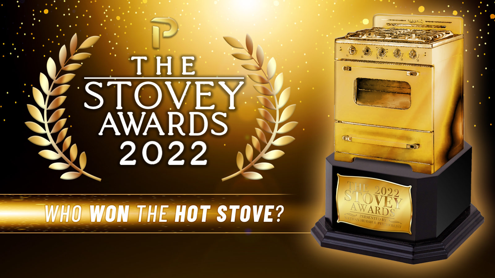
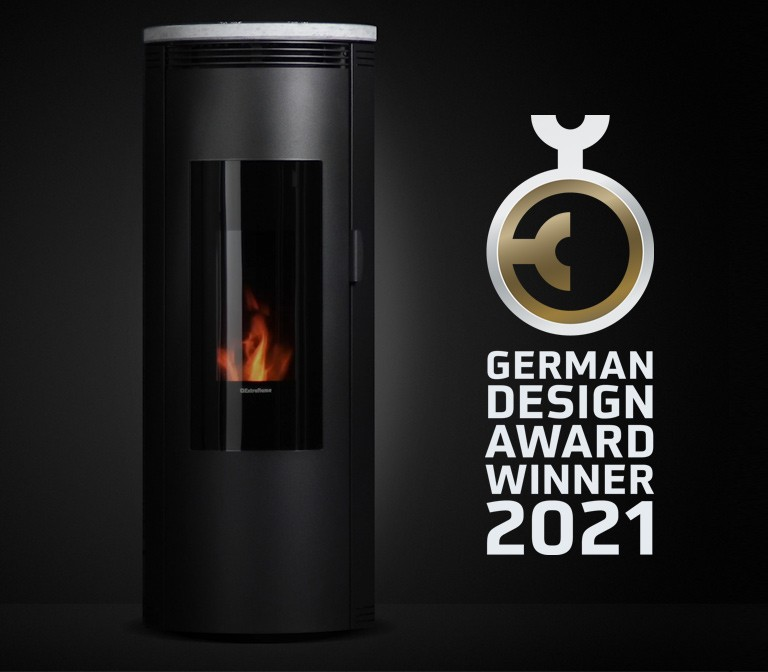
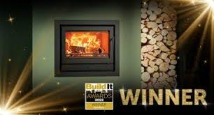

Achievements



News
Innovations in stove technology
In 2021, there may have been new developments in stove technology, such as the introduction of smart stoves with advanced features like remote control, energy efficiency, and safety features.
Changes in stove regulations
Government agencies and organizations may have implemented changes in regulations regarding the production and sale of stoves, such as new energy efficiency standards or safety requirements.
Consumer demand for eco-friendly stoves
With increasing concern for the environment, there may have been a growing demand for eco-friendly stoves that use renewable energy sources or have a low carbon footprint. This may have been reflected in the news as a growing trend in the stove industry.